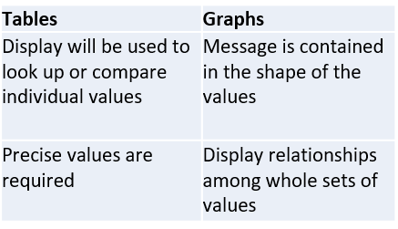
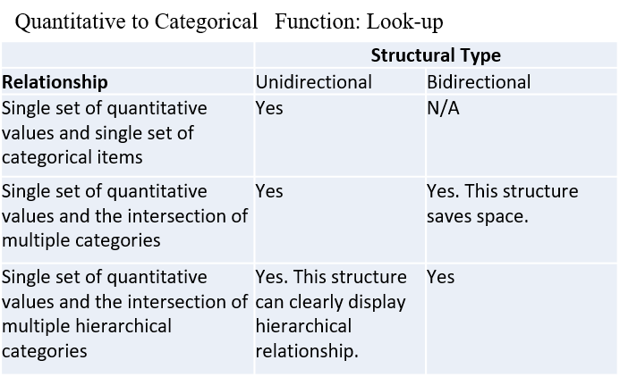
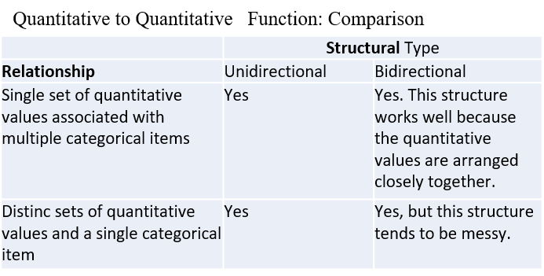

Data Science at GT
Module Three - Data Visualization Part I
Agenda
- History
- ASK Framework
- Tables and Graphs
- Telling compelling stories with numbers
- Group Acitivity
History
In 1914, Willard C. Brinton published one of the first books about graphical data presentation called “Graphic Methods of Presenting Facts”. His work gave way to further developments in the space during the last 20 years. Some current leaders in the field include Stephen Few, Benjamin Fry, and Colin Ware.
“If an editor should print bad English he would lose his position. Many editors are using and printing bad methods of graphic presentation, but they hold their jobs just the same. The trouble at present is that there are no standards by which graphic presentations can be prepared in accordance with definite rules so that their interpretation by the reader may be both rapid and accurate.” - Willard C. Brinton
ASK Framework
- Accuracy (of data) - includes proper labeling, scaling of axes, etc.
- Story - visualizations complement the story
- Knowledge - easy to comprehend and extract important points
Tables and Graphs
Tables
- Make it easy to loop up individual values
- High level of precision than graphs (eg. 27.38748)
- Can include multiple sets of quantitative values with different units
Graphs
- Visual display of quantitative information
- Displayed within an area delineated by one or more axes
- Values are encoded as visual objects
Use Cases
Variations of Tables
Structural Types
- Unidirectional: categorical items are laid out in one direction only (either across columns or down rows)
- Bidirectional: categorical items are laid out in both directions


Variations of Graphs
Graphs can be broken down into two main components, value-encoding and relationships.
Value-Encoding Objects
- Points
- Lines
- Bars
- Boxes
- Shapes with varying 2-D Areas
- Shapes with varying color intensities
Relationships
- Time Series
- Ranking
- Part-to-Whole
- Deviation
- Distribution
- Correlation

Compelling Stories
Some characteristics of well-told statistical stories include:
- Simple
- Seamless
- Informative
- Contextual
- Familiar
- Actional
- Sequential
Keep it as simple as possible
- Amplify the meaning and understanding of your contribution
- The art of exclusion: do not make your contribution more informative than is required
Make it Seamless
“Data graphics are paragraphs about data and should be treated as such”
- Edward Tufte, Statistics and Computer Science Professor at Yale University
Inform
- Reveal facts or interpretation of facts that your audience doesn’t already know
- Force people to look at something from a new perspective
Example: Hans Rosling’s 2006 presentation at the TED Conference stuck, in part because he revealed a relationship between fertility and life expectancy at birth that surprised many in the audience.
Use Context
- Take note of where your number came from and how you might have adjusted them
- Add context to charts by including information on attributes like targets (budgets or plans), forecasts, norms, etc.
Familiarity is your friend
- Use concrete language in your analysis
- Relate your findings to concepts your audience understand well
Example: Carlos Slim Helu’s net worth of $53.5 billion (USD) is equal to the annual income of 1.7 million worked in the the U.S. or 9.2 million workers in Mexico.
Actionable
- Make your analysis actionable by using your story to suggest one or more ways to respond
Sequential
- Reveal facts at the right moments in your analysis
Group Activity
Test
Next Week:
Machine Learning Basic Applications